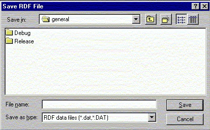

Write a pre-calculated radial distribution function (RDF) to disk. The file can then be read into your favorite plot program to be displayed graphically.

Line command: see export command
**************************************************************************
LUL/1996
**************************************************************************